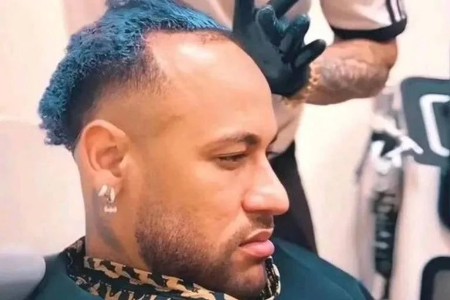

Cai cai?
Por: Estela e Heloisa
Neymar após lesionamento é altamente criticado por internautas que afirmam que ele não deveria estar na copa.
Internautas afirmam que Neymar não participará da copa por questões de lesionamento.
Por: Estela e Heloisa
Neymar após lesionamento é altamente criticado por internautas que afirmam que ele não deveria estar na copa.

Por: Estela e Heloisa
Neymar após não ser convocado, raspa sua cabeça, mas logo depois se arrepende, e faz um implante capilar. (informação diretamente do discord, 100% confiável)